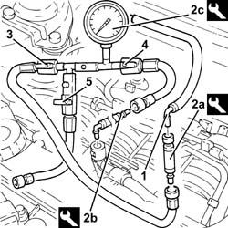
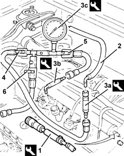

0510C10 FUEL SYSTEM - CHECK DELIVERY PRESSURE
- Path
- Procedures > 05 DIAGNOSTICS > 0510 VARIOUS CONTROLS > 0510C CHECK SYSTEMS > 0510C10 FUEL SYSTEM - CHECK DELIVERY PRESSURE
- Kind
- repair procedure (removal / refitting; the operation number is the code)
- Applies to
- engines: 1.8 T.SPARK, 2.0 JTS; all production periods
- Interactive page
- https://sloeber94.github.io/elrnDB-aGt/en/#/125000857
Applies to: engines: 2.0 JTS; all production periods
PROCEED WITH DRAINING THE HIGH PRESSURE FUEL SYSTEM FOLLOWING THE INSTRUCTIONS GIVEN BELOW.
Start the engine.
Keep the engine idling for 2 minutes.
Detach the fuel pump relay.
Wait until the engine cuts out.
Try and start the engine: if the engine starts within 10 seconds wait for it to cut out, then try and start the engine again; if the engine does not start within 10 seconds, continue for another 5 seconds.
Wait for the engine to cool down.
Proceed with the removal
Op. 1016A40 IGNITION COIL COVER ON CYLINDER HEAD- R+R.
1. Disconnect the fuel supply pipe rapid connector.
2. Fit tools (2a) and (2b) on tool (2c).
Description | Code | |
|---|---|---|
2a | Connector kit | 1.860.955.003 |
Description | Code | |
|---|---|---|
2b | Connector kit | 1.860.955.001 |
Description | Code | |
|---|---|---|
2c | Pressure gauge | 1.860.955.000 |
Connect the equipment produced in this way to the fuel supply pipe.
3. Open the ball valve.
4. Open the ball valve.
5. Close the ball valve.
Start the engine and whilst it is idling check that the low fuel pressure supply circuit pressure is within the recommended values.
Measurement | Value | ||
|---|---|---|---|
- | Fuel pressure at idle speed (bar) | 4.5 |
Switch off the engine.

Applies to: engines: 2.0 JTS; all production periods
Repeat the high fuel pressure system draining procedure following the instructions given above.
Disconnect the tools and remove them.
Connect the fuel supply pipe rapid connector.
Proceed with the refitting
Applies to: engines: 1.8 T.SPARK; all production periods
1. Connect the tool to the fuel manifold bleed valve and discharge the fuel pressure.
Description | Code | |
|---|---|---|
1 | Connector | 1.870.684.000 |
2. Disconnect the fuel supply pipe from the distribution manifold.
3. Fit tools (3a) and (3b) on tool (3c).
Description | Code | |
|---|---|---|
3a | Connector kit | 1.860.955.003 |
Description | Code | |
|---|---|---|
3b | Connector kit | 1.860.955.001 |
Description | Code | |
|---|---|---|
3c | Pressure gauge | 1.860.955.000 |
- Connect the equipment created to the fuel supply pipe and to the fuel manifold.
4. Open the ball valve.
5. Open the ball valve.
6. Close the ball valve.
- Start up the engine and, whilst it is idling, check that the fuel pressure is within the recommended values.
Measurement | Value | |
|---|---|---|
- | Fuel pressure at idle speed | 3.3 - 3.7, bar |
- Switch off the engine.

Applies to: engines: 1.8 T.SPARK; all production periods
- Disconnect the tools from the fuel manifold and from the fuel supply pipe.
- Connect the fuel supply pipe to the fuel manifold.
Topics linked from this page (1)
Topics that link to this page (9)
- B13 ENGINE STARTS WITH DIFFICULTY'
- B20 ENGINE STARTS, AND CUTS OUT STRAIGHT AWAY
- D01 ENGINE NOT RUNNING SMOOTHLY / (HESISTANT)
- D03 ENGINE NOT RUNNING SMOOTHLY / (IRREGULAR OPERATION)
- D05 ENGINE DOES NOT PRODUCE BEST PERFORMANCE
- D10 ENGINE IDLE IRREGULAR
- D21 ENGINE CUTS OUT WHILST DRIVING
- Z53 MISFIRE ERROR
- Z54 MISFIRE ERROR IN ONE CYLINDER